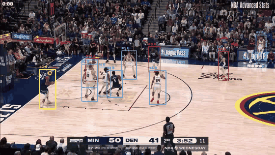

Computer vision · NBA broadcast
Basketball video in, named play-by-play out. Nine stages, thirty modules, 346 tests — and eleven validation gates whose job is to say where it doesn't work.
Open the Film Room → Ask plain-English questions about 20 games — 10,479 actions derived from 25 Hz tracking coordinates, with every answer built only from the rows it cites.
Eight seconds of a Nuggets possession. Every box, id and label below is inferred from pixels.

{ "time_s": 4.08, "action": "steal", "team": "A", "player_name": "Conley" } { "time_s": 5.68, "action": "rebound", "team": "A", "player_name": "Randle" } { "time_s": 7.28, "action": "pass", "team": "B", "player_name": "Jokić" }
The names come from joining the event timeline against the official play-by-play — no jersey OCR. When a match isn't confident the event keeps its anonymous track id rather than guessing, and a fabrication guard rejects any name the events don't carry.
Numbered because it genuinely is a sequence — each stage consumes the one above it.
Stage 8 is the one that surprised me. Arbitrary footage has no join key, so the only way to line video up with the official record is the clock on screen. A template reader validates itself on the one thing a game clock always does — count down — and passed 96 of 96 consecutive reads.
Every number is a count of emitted events against the NBA's own play-by-play for the same game. A ratio of 1.00× means the system reported exactly as many as actually happened.
| Action | Ratio | Footage | |
|---|---|---|---|
| Shot | 0.94× | 141 min continuous | holds |
| Steal | 1.73× | cut-segmented | holds |
| Block | 0.67× | cut-segmented | holds |
| Rebound | 4.25× | 141 min continuous | over-reports |
Each class clears the bar somewhere, but never all at once on one game: shot needs uncut footage, while steal and block were only measurable on joined clips.
Ten full games of 25 Hz player coordinates, to answer a different question: is the event logic right when perception is perfect? Precision sits beside every ratio, because a count can be hit by accident.
| Action | Median | Precision | Recall | |
|---|---|---|---|---|
| Shot | 0.78× | 0.89 | 0.71 | solved |
| Rebound | 1.20× | 0.51 | 0.59 | sound |
| Steal | 1.71× | 0.24 | 0.35 | marginal |
| Block | — | — | — | not emitted |
Read the precision column, not the ratio. Steal's count fits, but 0.24 precision means three of four are the wrong moment — and perfect perception didn't fix it. That makes steal an event-logic problem, not a camera one, and no amount of model training would have found it.
Measured, not hedged.
Block is below chance from pixels. Separating a block from ordinary play scores −0.170 lift from a player crop — worse than always guessing. Two geometric routes failed too: blocked shots still reach the rim (median 0.4 ft, so they're a subset of shots, not a complement), and a defender at the ball doesn't separate them, because on any shot the shooter is right there.
A player crop can't contain a rebound. The crop follows the ball-handler; a rebound is the ball
coming off a rim that's outside the frame. Separability is +0.042 from the crop against +0.113 from the
whole frame — which is why rebound quietly became the model's label for anything
generic, and claimed 82% of a game.
Steal is barely visual at all. +0.054 lift. It isn't a look; it's a possession change.
Those three findings redirected the whole project: these are possession and trajectory events, not visual categories. Deriving steal from possession instead of classifying it took it from 33.8× over-reporting to 1.73×.
| Item | Result |
|---|---|
| Full-game throughput | 84,589 frames in 47.7 min — 1.76× real time, memory flat in clip length |
| Fused CUDA kernel | Compiles under nvcc 12.8; matches an OpenCV oracle to 0.1456 against a 2.0 tolerance |
| Dual-GPU split | Verified, and measurably not worth it — the classifier was never the bottleneck |
| Possession | 9/9 on a human-annotated answer key |
| Dataset confound | Corpus membership worth +0.010 of label accuracy, down from +0.150 |
| Tests | 346, across 30 modules and 11 validation gates |
The fused kernel measured 1.4× faster than the reference on one machine and 1.0× on another, same GPU model. It's recorded as not reproducible rather than as a speedup — the first benchmark ran while training held the GPU at 71%, and a benchmark on a contended GPU isn't one.